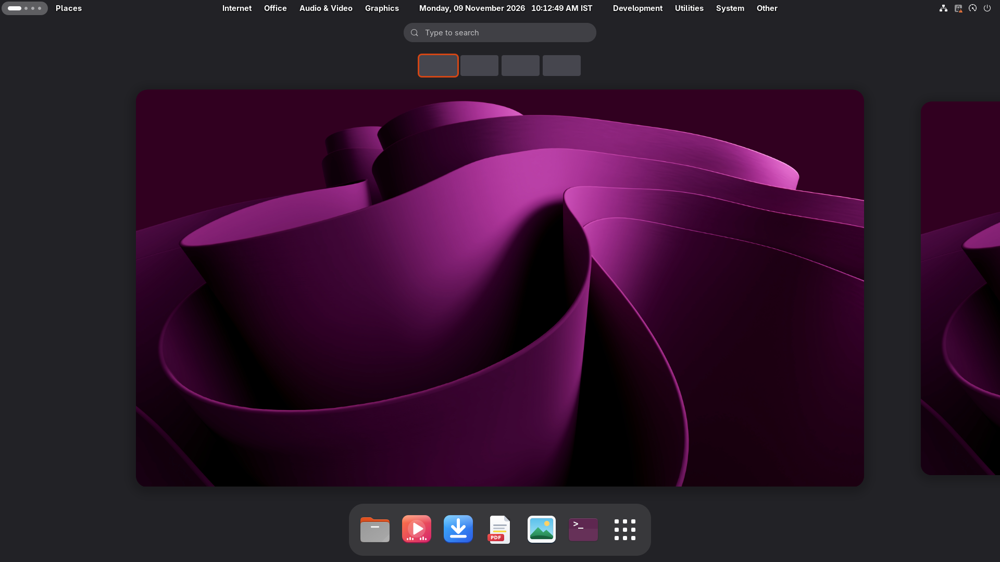

HRHsofts Ubuntu: customized Ubuntu with HRHsofts apps
A ready-to-use Ubuntu 26.04.1 desktop with 10 HRHsofts apps, cloud drives in Files, nearby sharing and a refined desktop. The apps also install on any Ubuntu as .deb packages or from the terminal.
Download HRHsofts Ubuntu 26.04.1Browse Ubuntu apps
Install the apps on Ubuntu
Every app, in one command (it adds the signed HRHsuite repository, then installs the apps):
wget -qO- https://hrhsofts-repos.github.io/apt/install.sh | sudo shChoose apps, or add the HRHsofts desktop too:
wget -qO- https://hrhsofts-repos.github.io/apt/install.sh | sudo sh -s -- pdfviewer mediaplayerwget -qO- https://hrhsofts-repos.github.io/apt/install.sh | sudo sh -s -- allAlready added the repository? sudo apt install hrhsofts-calculator works like any Ubuntu software. You can also
download a .deb below and open it, or run sudo apt install ./hrhsofts-NAME.deb.
Offline installer for every component: HRHsofts-Suite-2026.11.09.run (24.0 MB, SHA-256 42ecb6b6de4be28d21d9cccff4fcc7cdf1827bc3d270319fb8282f5027c906a7). Run it with sh HRHsofts-Suite-2026.11.09.run.
Ubuntu apps by HRHsofts
Calculator, CipherPost, Cleaner, Downloader, Image Viewer, Media Player, PDF Viewer, Recorder, Screen Capture, WhatsApp.
Calculator
Version 1.1.2Scientific, programmer, graphing and finance calculator
CipherPost
Version 1.2.0Private, end-to-end encrypted email
Cleaner
Version 2.2.3Free disk space safely

Downloader
Version 1.2.3Video, Music and File Downloader

Image Viewer
Version 1.1.2View, edit, convert and print images of every format
Media Player
Version 1.2.3Audio and Video Player
PDF Viewer
Version 1.1.2Document Viewer
Recorder
Version 1.1.2Audio Recorder
Screen Capture
Version 1.3.3Screenshot and Screen Recorder
WhatsApp
Version 1.2.4WhatsApp Web with native desktop controls
Desktop add-ons
Components that make up the HRHsofts Ubuntu desktop. Install them all with
… | sudo sh -s -- desktop.
| Component | What it does | Version | Download |
|---|---|---|---|
HRHsofts Fileshrhsofts-files | File manager with HRHsofts tabs, previews and quick actions | 1.0.64 | .deb 94.2 KB |
HRHsofts Nearby Share between HRHsofts computershrhsofts-share | Send files and text to nearby HRHsofts computers | 1.0.65 | .deb 22.0 KB |
HRHsofts Cloud Drives for Files (Google Drive, OneDrive, Dropbox, Box, pCloud)hrhsofts-cloud | Google Drive, OneDrive, Dropbox, Box and pCloud inside Files | 1.0.64 | .deb 20.0 MB |
HRHsofts Category Menus for the top barhrhsofts-topbar | Category menus for the top bar that adapt to the screen width | 1.0.65 | .deb 6.9 KB |
HRHsofts Windows On Top Shell extensionhrhsofts-windows-on-top | Keep any window above the others | 1.0.65 | .deb 4.2 KB |
HRHsofts desktop right-click menushrhsofts-desktop-menu | Right-click desktop menus: new file, open terminal, wallpapers | 1.0.65 | .deb 4.3 KB |
HRHsofts desktop defaults for every accounthrhsofts-desktop-defaults | HRHsofts theme, dock and desktop defaults for every account | 1.0.63 | .deb 3.8 KB |
HRHsofts fast boothrhsofts-fast-boot | Shorter boot without disabling anything you use | 1.0.63 | .deb 2.1 KB |
HRHsuite updates from the HRHsofts repository on Azurehrhsofts-updater | Adds the signed HRHsuite repository and its update checks | 1.0.2 | .deb 8.4 KB |
Updates from Azure
Packages are served from a signed APT repository at https://hrhsuiteupdates.blob.core.windows.net/apt. When a new version is published it shows up in
Software Updater, in each app's Check for Updates and in the catalog (updated 2026-11-09).
Questions
Which Ubuntu versions are supported?
Ubuntu 26.04 LTS and later on 64-bit PCs (amd64). The apps also come preinstalled on HRHsofts Ubuntu.
How do updates work?
The installer adds the signed HRHsuite APT repository hosted on Microsoft Azure. New versions appear in Software Updater with the rest of the system, inside each app under Check for Updates, and with sudo apt update && sudo apt upgrade.
Do the apps show up in App Center?
Yes. The repository publishes AppStream data, so after installing hrhsofts-updater the apps can be found in Ubuntu's software tools and with appstreamcli search hrhsofts.
Is the download safe?
Every package list is signed with the HRHsuite archive key and every file has a SHA-256 checksum. The ISO also has a published checksum and validation report.
How do I remove an app?
Open App Center, or run sudo apt remove hrhsofts-NAME, for example sudo apt remove hrhsofts-cleaner.